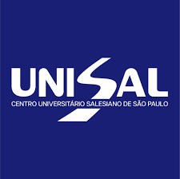

Vamos usar vídeos incorporados (não precisa baixar), o atributo rowspan para mesclar na vertical e o colspan para mesclar na horizontal.
| UNISAL | Unidade de Campinas - Campus São José | |||
| Galeria Multimídia | Vídeos - INCORPORAR | Áudios | Imagem/Hiperlinks |
|  | |||
|
UNISAL - Assista o vídeo clicando no Link abaixo: Palavra ReitorClique no Link para acessar o site do Centro Universitario Salesiano de São Paulo unisal.br |
|||